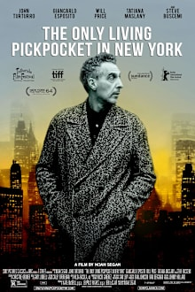
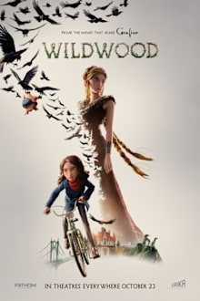
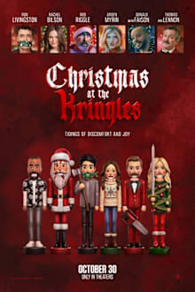
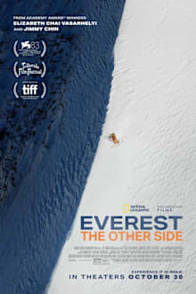

Theaters · Raleigh area · Fri Oct 30 + Sat Oct 31, 2026
Pickpocket at Alamo Friday. Wildwood if Bekah hasn't seen it.
BLUF: Your pick is The Only Living Pickpocket in New York, Friday 7:30 at Alamo Raleigh. It's the only new release worth the drive: John Turturro as an aging pickpocket in a New York that moved on without him, 97% RT, Metacritic 81, 88 minutes. Bekah's pick is Wildwood, Friday 6:15 at AMC Dine-In Holly Springs (Laser at AMC), last week's pick, if you two didn't already go. Do it Friday, since Saturday is Halloween. Alamo sells out, so buy tonight.
Tonight's test
- Watch the official Pickpocket trailer on YouTube together. It's about 2 minutes.
- If Bekah's into it, book Alamo Friday 7:30.
- If she's lukewarm and you haven't seen Wildwood yet, book AMC Holly Springs Friday 6:15.
- If you already saw Wildwood, it's Pickpocket or stay home.
The picks

The Only Living Pickpocket in New York YOUR PICK
1h28m · R · Noah Segan · John Turturro, Giancarlo Esposito, Steve Buscemi, Tatiana Maslany · Sony Pictures Classics
An old-school pickpocket lifts the wrong USB stick and has to give it back before a crime family finds him.
RT 97% (89 reviews) / 86% audience · Metacritic 81 · Atom 3.4/5
Segan is Rian Johnson's regular actor (Looper, Knives Out) making his directing debut, and it played Sundance and Berlin. The RT consensus calls it one of the best roles of Turturro's career. TheWrap says "bittersweet," and one Berlinale review called it analog crime in a digital city. That's your lane. At 88 minutes it's an easy Friday. It goes wide this week and it's the only new opener here that clears the bar. Bekah: a coin flip. He's a devoted husband caring for his disabled wife, which helps. But it's a quiet character piece, and Atom's 3.4/5 audience rating is soft. Run the test first.

Wildwood BEKAH'S PICK
2h12m · PG-13 · Travis Knight · Laika
Crows carry off a girl's baby brother into the forbidden forest outside Portland, and she bikes in after him.
RT 99% / 97% audience · Metacritic 86 · Atom 4.4/5
Last week's pick, and it's still the best-reviewed movie in theaters. Handmade stop-motion from the Coraline studio, an original fairy tale, not a franchise. It isn't at Alamo or Fenton. Skip this card if you already went. Bekah: high odds. Sister rescues brother, talking animals, a 97% audience score.
The Only Living Pickpocket in New York
| Theater | Fri 10/30 | Sat 10/31 |
|---|
| Alamo Drafthouse Raleigh | 7:30 · 10:15 | 7:30 · 10:45 |
| Regal Crossroads, Cary | 5:30 · 8:05 | 5:30 · 8:05 |
| Paragon Fenton, Regal White Oak, Regal North Hills, AMC Holly Springs | not playing | not playing |
Wildwood
| Theater | Fri 10/30 | Sat 10/31 |
|---|
| AMC Dine-In Holly Springs (Laser at AMC) | 6:15 · 10:15 | 6:15 · 10:30 |
| Regal North Hills, Raleigh | 6:20 · 9:30 | 6:20 · 9:30 |
| Regal Crossroads, Cary | 6:30 · 9:40 | 6:30 · 9:40 |
| Regal White Oak, Garner | 6:40 · 9:45 | 6:40 · 9:45 |
| Alamo Raleigh, Paragon Fenton | not playing | not playing |
Evening shows, standard format unless noted. Pulled Thursday from Atom Tickets and Fandango. Fenton has neither pick; its Axis15 is running Clayface all weekend. If you end up at a Regal, the military discount is box office only with ID.
Skip

Christmas at the Kringles SKIP
1h38m · R · Kevin Lewis · Ron Livingston, Rachel Bilson, Rob Riggle
New neighbors celebrate Christmas year-round and want to brainwash your family.
No Metacritic yet · Atom 2.2/5 · Letterboxd 2.2
The week's only new wide horror-comedy. Audiences already rate it 2.2 and an early review gave it 2 out of 10. Skip.

Everest: The Other Side SKIP
Documentary · Elizabeth Chai Vasarhelyi and Jimmy Chin (Free Solo) · National Geographic
A ski descent down Everest's other face, shot for IMAX.
Metacritic 65 · Atom 3.6/5
Good directors, middling reviews. Skip.
Already seen: Primetime, Resident Evil, Toy Story 5. Already planned: You Can See Everything (goes wide this week, Metacritic 95). Also cut: Wicker (last week's Alamo backup, Metacritic 70, Alamo Fri 6:00 and Sat 7:00 if you still want it), Clayface, Street Fighter, Fjord (heavy, Benny-solo), Sense and Sensibility, Klara and the Sun, Breeder, Other Mommy, Verity, Forgotten Island (DreamWorks, 95%, matinees only). Your Mother Your Mother Your Mother is down to late shows at Alamo. Gentle Monster and The Mosquito Bowl are Netflix and aren't on these screens. Re-releases: Alamo's Halloween run (Halloween, Scream, Rocky Horror, Trick or Treat), Scream 30th at Regal.
Next 2-3 weeks
- Wild Horse Nine (Martin McDonagh, Searchlight). Malkovich as a dying CIA officer, Rockwell as his protégé, plus Buscemi and Tom Waits. RT 94%, Metacritic 79, Malkovich won Best Actor at Venice. Nov 6. Benny for sure, Bekah probably.
- Club Kid (A24, Jordan Firstman). Washed-up party promoter suddenly has a 10-year-old son. RT 100%, Metacritic 84 on festival reviews. Nov 6, limited. Benny, maybe both.
- The Cat in the Hat (Warner Bros. Animation, Bill Hader as the Cat). Bekah's nostalgia lane. No reviews yet, has to clear the bar. Nov 6.
- Ebenezer: A Christmas Carol (Ti West, Johnny Depp, Ian McKellen as Marley). Gothic Dickens from the X and Pearl director. Nov 13. Both: horror auteur, story she grew up with.
- Paper Tiger (James Gray, Adam Driver, Scarlett Johansson). Nov 13. Benny.
- The Hunger Games: Sunrise on the Reaping (Francis Lawrence). Bekah's lane if reviews hold. Nov 20.
Sources: Rotten Tomatoes, Metacritic via Atom Tickets, Atom Tickets, Fandango, TheWrap, Geek Vibes Nation, The Oscar Project, Todd Thatcher, Wikipedia. Final version, Oct 29, 2026.